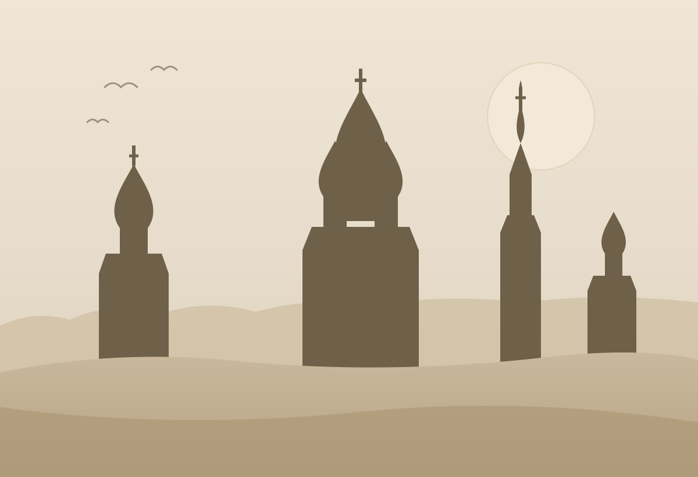
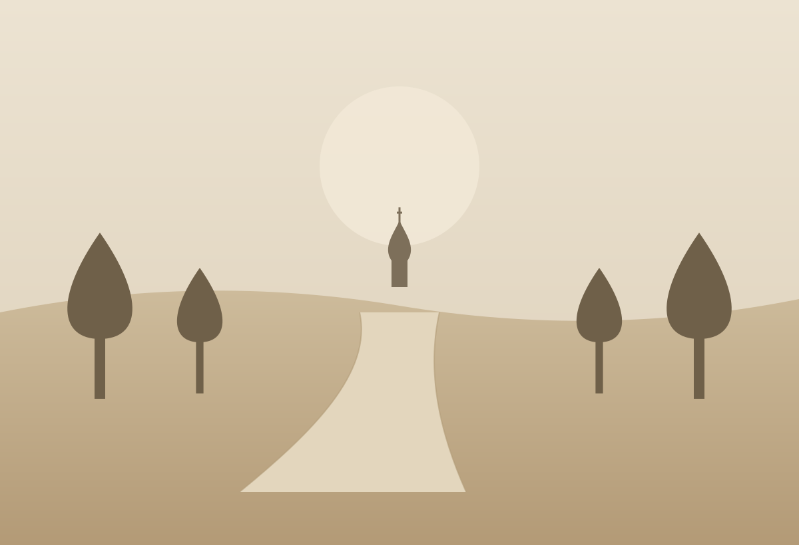
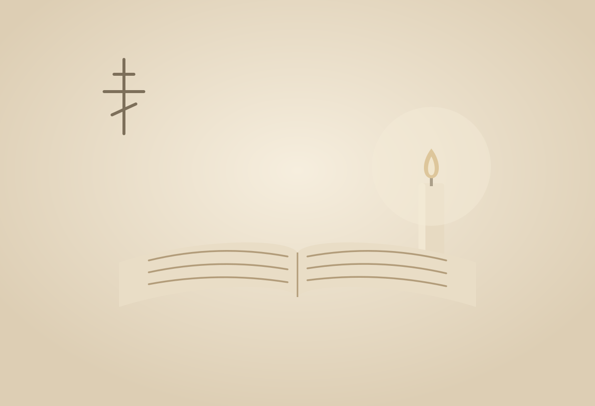

Мини-цикл из утренних и вечерних
бесед и совместных чтений


Русская сказка


Анонс
Русские народные сказки и евангельские притчи редко сопоставляются. Но если присмотреться глубже, окажется, что они говорят об одном и том же – о том, как возделывать в себе человека. В них задаются схожие вопросы: почему мы теряем самое дорогое? Что такой справедливость? Почему одни проходят испытания жизни, а другие ломаются? Что помогает человеку пережить трагедию?
На протяжении трёх дней мы будем читать русские народные сказки (от известных до более загадочных и темных) и евангельские притчи (знакомые и не очень), сопоставлять их через призму мифологии, психоанализа и нашей интуиции – и обнаруживать удивительные узоры. Мы попробуем увидеть, почему одни и те же психические процессы на протяжении столетий возбуждают в нас тексты настолько разной природы как сказки и притчи.


На курсе мы узнаем
- Что общего между евангельскими образами и образами русского фольклора?
- Почему сказка — это не детская литература, а один из древнейших способов говорить о внутренней жизни человека и направлять его?
- Почему герои народных сказок постоянно теряют, ищут, проходят испытания и возвращаются домой?
- Как устроены архетипические сюжеты и почему они продолжают действовать в современной жизни?

Но главное — мы зададим себе простые и важные вопросы:
- Что именно я пытаюсь вернуть в своей жизни и может ли быть, что это невозможно?
- Почему чтобы что-то обрести порой необходимо что-то потерять?
- Что я считаю справедливостью – и совпадает ли она с тем, как устроена жизнь?
- Какие испытания невозможно пройти только с помощью силы?
- Что значить «спастись» и нужно ли это?
- Какие истории я продолжаю проживать, даже не замечая этого?

Детали
Даты29 июня – 2 июля
МестоСуздаль
Стоимость участия120 000 ₽
Проживаниеуточняется — впишите детали